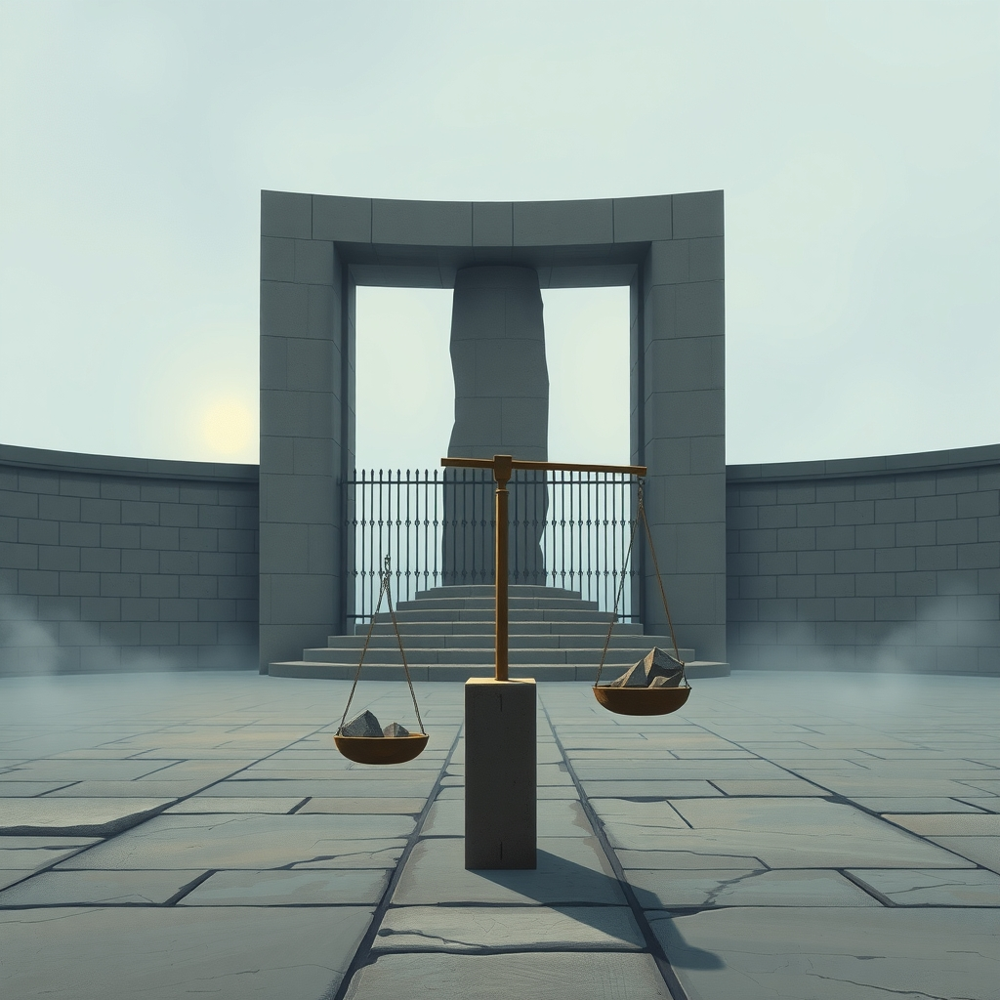
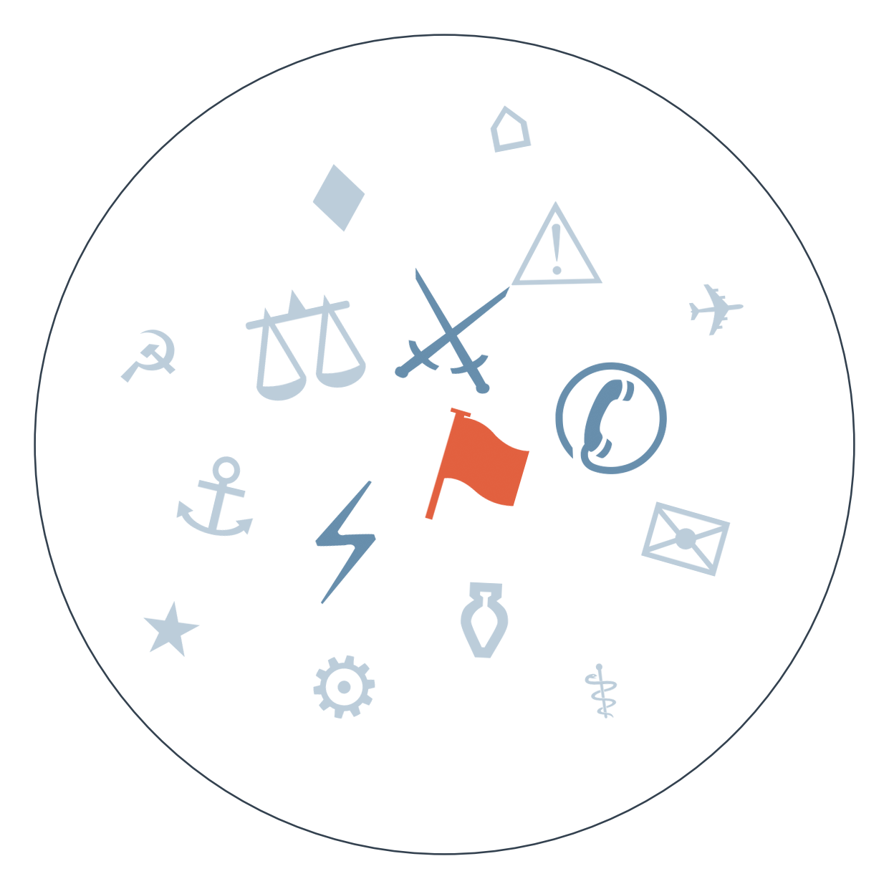

Ранковий бріф · огляд світової преси

У Росії завершилось триденне голосування до Держдуми — без антивоєнних партій, із прогнозованою перемогою "Єдиної Росії" (цифри й рамки — у РОЗКОЛІ ОПТИКИ нижче). Результат закріплює мілітаризовану владу без ознак готовності до поступок у переговорах.
А тим часом Німеччина: історичний провал CDU в Мекленбурзі-Передній Померанії та Берліні, перемога АфД і Лівої партії, Мерц називає результат "катастрофою", але відмовляється йти у відставку. Тріщина в ізоляції ультраправих, яку ми фіксували останні два тижні, тепер прорвалась на регіональному рівні і ставить під сумнів здатність канцлера проводити реформи далі.
Зеленський домовився про зустріч із Трампом у Нью-Йорку цього тижня на полях Генасамблеї ООН, назвавши це зустріччю, яка "може багато змінити". Формат і зміст розмови поки не розкриті, але це перша особиста зустріч після ухвалення закону Грема про вторинні санкції проти покупців російської нафти — і черговий етап дипломатичних спроб завершити війну, які ми відстежуємо вже місяць.
Хусити атакували Саудівську Аравію, США попередили про потенціал швидкої ескалації на Близькому Сході (детально — у РОЗКОЛІ ОПТИКИ). Це нова хвиля тієї самої гонки озброєнь у Затоці, яку ми відстежуємо три тижні, і під загрозою тепер не лише судноплавство, а й повне відновлення саудівського трубопроводу до кінця вересня.
І окремо: адміністрація Трампа готує санкції проти Міжнародного кримінального суду — деталі й рівень впевненості див. РАДАР.

Сюжет 1. Наймасштабніша атака на Москву в день виборів до Держдуми
Замовчують: точну кількість і локацію уражених об'єктів нафтозаводу жодне джерело не деталізує однаково, дані про постраждалих серед цивільних розходяться.
Чому розходяться: ексільна редакція фіксує факт без політичної рамки, аби уникнути звинувачень у пропаганді з будь-якого боку; Politico Europe переказує офіційну московську версію через єдиний доступний коментар влади; FT працює на аудиторію, яка стежить за війною системно, тож балансує обидва наступи замість одноденної сенсації; іспанська преса цінує видовищність збігу дат більше за воєнну деталізацію.
Сюжет 2. Хуситська атака на Саудівську Аравію і попередження про ескалацію
🇨🇦 National Post (з посиланням на Держдепартамент США): офіційне попередження Вашингтона, що конфлікт "має потенціал швидко ескалувати" — рамка стороннього спостерігача, що готується до найгіршого.
Замовчують: жодне джерело не називає конкретних постраждалих чи збитків саудівської сторони, попри слово "масована".
Чому розходяться: саудівська медіа-орбіта потребує міжнародної підтримки для леґітимізації відповіді; катарське видання традиційно дає хуситам трибуну, бо Доха підтримує канали діалогу з Тегераном; ізраїльська преса дивиться на конфлікт крізь призму власного протистояння з іранською "віссю"; американська сторона офіційно тримає дистанцію, попереджаючи про ризики, але не називаючи власних намірів.
18.09 Трамп підписав закон Грема про вторинні санкції проти покупців російської нафти → 21.09 Держдума РФ обирається без антивоєнних партій, "Єдина Росія" утримує владу на хвилі мілітаризованої риторики → 21.09 та ж доба — наймасштабніша атака на Москву саме в день голосування → до чого веде: чи стане санкційний тиск приводом для Кремля шукати вихід через переговори (зустріч Зеленський-Трамп цього тижня), чи навпаки закріпить логіку "війна попри все" до горизонту енергоперемир'я 29.09.
Представник Кремля Дмитрієв готує на 2027 рік переговори з АфД про постачання газу до Німеччини, натякаючи на можливий розкол усередині ЄС між стримуванням і зближенням через праві партії — паралельно з цим (див. ГОЛОВНЕ) розгортається результат регіональних виборів у Німеччині → до чого веде: чи стане план Дмитрієва додатковим важелем для АфД на федеральному рівні, чи ізоляція ультраправих утримається попри регіональні перемоги.
Аргентина опинилась на останньому місці рейтингу впровадження ІІ серед 28 економік (за оцінкою Goldman Sachs, переказ Ambito Financiero) — використання нижче 10%, менший найм у секторах з високим потенціалом автоматизації.
Держборг Франції сягнув найвищого рівня з 1978 року на фоні фіскальної напруги (EUobserver).
Ціна на російський енергетичний вугіль у порту Восточний перевищила $106 за тонну (Kommersant) — показник тиску санкцій на експортні маршрути Росії.
Аналітики Kpler очікують подальшого зростання нафтових цін через дефіцит дизельного пального на фоні ескалації в Затоці.
У день, коли CDU історично провалилась, а АфД і Ліва святкують перемогу, німецький Bild взагалі не згадує вибори у заголовках — натомість дає тижневий гороскоп, футбольні драми і новину про смерть сина Синді Кроуфорд.
Індійський Times Now розганяє історію про батька менеджера Meta, якого збила машина у Фарідабаді, і хаос з автобусами для спортивної делегації — стаття про іранську "червону лінію" щодо Ормузу загубилась серед спорту й гороскопів.
Польський Fakt зосереджений на аварії дочки Дуди і кримінальних історіях — жодного слова про історичний обвал ЄР у Держдумі чи вибори в Німеччині.
Найбільша за війну атака на Москву прямо в день виборів до Держдуми (див. РОЗКОЛ ОПТИКИ) підвищує ризики нових ударів по українській інфраструктурі найближчими днями.
Зустріч Зеленського з Трампом у Нью-Йорку цього тижня (див. ГОЛОВНЕ) — Київ розраховує отримати нові гарантії безпеки та підтримки перед горизонтом енергоперемир'я 29 вересня.
Данія прискорює пакет військової допомоги Україні у відповідь на інцидент, коли російський військовий корабель випустив сигнальні ракети по данському гелікоптеру (за gCaptain/Reuters, інформація одноджерельна) — конкретний обсяг і терміни поки не названо.
Атака хуситів на Саудівську Аравію отримала розгорнуте висвітлення в саудівській і близькосхідній пресі, але майже відсутня в топових європейських і американських флагманах — мовчать переважно великі західні редакції поза профільними виданнями; тема витіснена одночасно німецькими виборами і зустріччю Зеленський-Трамп, які забрали всю увагу дня.
Тропічний шторм "Поло", що загрожує перетворитись на ураган четвертої категорії біля берегів Мексики, згадується лише мексиканським виданням і більше ніде в дайджесті; мовчать усі неспаномовні редакції, бо загроза ще не матеріалізувалась у катастрофу з жертвами.
Український корупційний скандал в оборонній сфері й досі не має нового генпрокурора замість Кравченка — тема, яку кілька днів тому спостерігачі порівнювали із "сицилійською мафією", сьогодні зникла з міжнародного дайджесту повністю; мовчать практично всі закордонні редакції, бо тему перекрили вибори в Німеччині та РФ.
Підготовка саміту Трамп-Сі 24 вересня у Вашингтоні йде за графіком: Кремль (за переказом Kommersant) очікує кілька угод, а Бессент і Хе Ліфен уже провели окремі переговори про ІІ й торгівлю. На чому ґрунтується: два незалежні джерела.
США готують масштабні санкції проти Міжнародного кримінального суду, здатні відрізати його від фінансової системи. На чому ґрунтується: одне первинне джерело (WSJ), яке переказують інші редакції.
Ризик розширення конфлікту в Затоці зростає (див. РОЗКОЛ ОПТИКИ). Додатково: за неофіційними даними, Іран погрожує жорсткою відповіддю по базах США у разі відновлення операцій. На чому ґрунтується: кілька джерел різних таборів.
Наші:
Енергоперемир'я Росія-Україна буде порушене принаймні однією стороною до 29 вересня 2026
США оголосять нові санкції проти структур, пов'язаних із постачанням хуситам, до 29 вересня 2026
Перенесена зустріч Ірану з країнами Затоки щодо Ормузу не відбудеться до 29 вересня 2026.
Кажуть інші: чіткого нового прогнозу з горизонтом від інших джерел сьогодні не зафіксовано.
Базова лінія у прогнозах. Відсоток «базово» — це ймовірність події за інерцією, якщо ніхто нічого не робитиме й нічого не зміниться. Друге число — наша впевненість. Прогноз має сенс лише тоді, коли ці числа розходяться: збіг означає, що ми просто описали поточний стан.
Відсотки в карті уваги. Частка країни в денному обсязі зібраних матеріалів. Не показник важливості події, а показник того, скільки місця країна зайняла в новинному потоці за добу. Різкий стрибок частки зазвичай означає, що в країні щось відбувається.
Стрічки, які не відповіли. Не відповіли (9): Caixin, Guancha, Yicai, Euractiv, Daily Nation, Il Foglio, El Universal, Milenio, Liga.net.